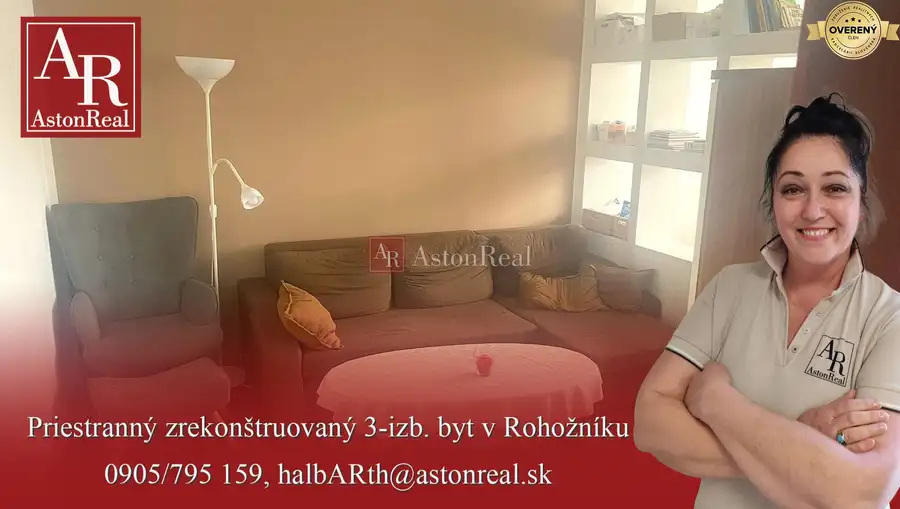
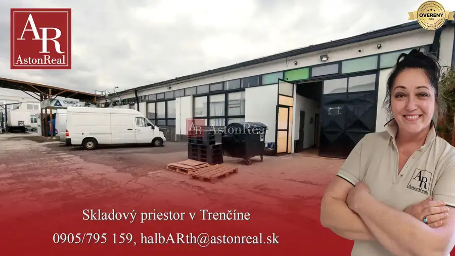
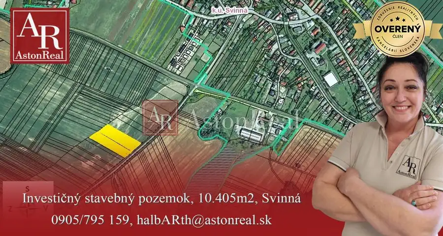
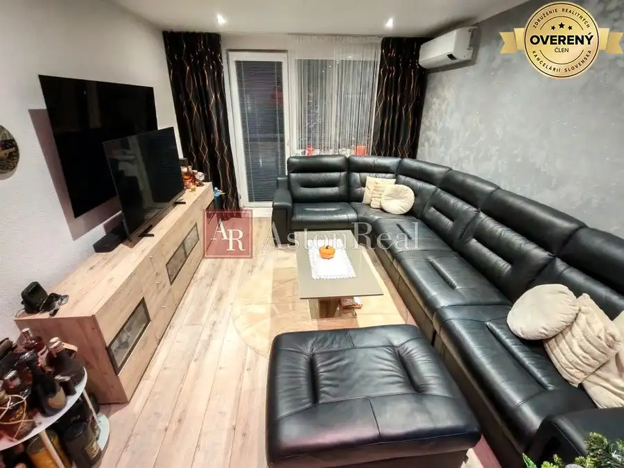

Aktuálna ponuka
Nehnuteľnosti, ktoré ponúkam
8 nehnuteľností na predaj a prenájom. Vyberte typ, alebo napíšte lokalitu.
8 z 8 ponúk
 Byt9
131 900 €IBA U NÁS! Byt 1,5 izb. byt, 41m2,balkón, zariadený, Východná, Trenčín
Trenčín
1,541 m²1. podlažie
AstonReal ponúka vo výhradnom zastúpení majiteľa na predaj priestranný a vkusný 1,5-izbový byt s balkónom, o výmere podlahovej plochy 41m2, vo…
Byt9
131 900 €IBA U NÁS! Byt 1,5 izb. byt, 41m2,balkón, zariadený, Východná, Trenčín
Trenčín
1,541 m²1. podlažie
AstonReal ponúka vo výhradnom zastúpení majiteľa na predaj priestranný a vkusný 1,5-izbový byt s balkónom, o výmere podlahovej plochy 41m2, vo…
 Byt10
137 000 €IBA U NÁS! Vkusný 2-izbový ateliér, 58m, Pod Sokolice,Trenčín
Trenčín
2-izbový58 m²1. podlažie
AstonReal ponúka v exkluzívnom zastúpení majiteľa na predaj pekný, priestranný a vkusný 2-izbový ateliér bez balkóna (58m2), v novostavbe z r. 2009…
Byt10
137 000 €IBA U NÁS! Vkusný 2-izbový ateliér, 58m, Pod Sokolice,Trenčín
Trenčín
2-izbový58 m²1. podlažie
AstonReal ponúka v exkluzívnom zastúpení majiteľa na predaj pekný, priestranný a vkusný 2-izbový ateliér bez balkóna (58m2), v novostavbe z r. 2009…
 Ostatné7
33 000 €IBA U NÁS! Garáž, 17m2, Partizánska ul., Trenčín
Trenčín
17 m²
V garáži je zavedená elektrina (osvetlenie, zásuvka 230V). Garáž má spoločný elektromer s ostatnými garážami v danom bloku. Ročné náklady na…
Ostatné7
33 000 €IBA U NÁS! Garáž, 17m2, Partizánska ul., Trenčín
Trenčín
17 m²
V garáži je zavedená elektrina (osvetlenie, zásuvka 230V). Garáž má spoločný elektromer s ostatnými garážami v danom bloku. Ročné náklady na…
 Apartmány9
240 000 €PREDAJ 2 pekné apartmány, 130m od pláže, výhľad na more, Sardínia
Castelsardo
4-izbový112 m²1. podlažie
AstonReal ponúka vo výhradnom zastúpení majiteľa 2 pekné apartmány vzdialené od pláže 130m, s výhľadom na more a mestečko Castelsardo na Sardínii.…
Apartmány9
240 000 €PREDAJ 2 pekné apartmány, 130m od pláže, výhľad na more, Sardínia
Castelsardo
4-izbový112 m²1. podlažie
AstonReal ponúka vo výhradnom zastúpení majiteľa 2 pekné apartmány vzdialené od pláže 130m, s výhľadom na more a mestečko Castelsardo na Sardínii.…

Byt10 169 950 €Priestranný byt 3+1, 86m2, balkón, kompletná rekonštrukcia, Rohožník Rohožník 3-izbový86 m²1. podlažie AstonReal ponúka v zastúpení majiteľa na predaj priestranný a vkusný 3-izbový byt s balkónom, o výmere podlahovej plochy 86m2, v malebnej lokalite…
Nebytové priestory8 Cena dohodouSkladový priestor, 150m2, Zlatovská, Trenčín Trenčín 150 m² Aston Real ponúka na prenájom skladový priestor na Zlatovskej ulici v priemyselnej časti mesta Trenčín s celkovou úžitkovou plochou o rozlohe cca 150…
Pozemok8 541 060 €Investičné stavebné pozemky: 4.888m2, 5.517m2 alebo 10.405m2, Svinná Svinná 10405 m² AstonReal ponúka v exkluzívnom zastúpení majiteľa na predaj investičný stavebný pozemok určený na výstavbu rodinných domov, ktorý pozostáva z dvoch…
Byt9 175 000 €IBA U NÁS! Elegantný 3 izbový byt, lodžia,kompletná rekonštr.,Piešťany Piešťany 3-izbový67 m²2. podlažie AstonReal ponúka vo výhradnom zastúpení majiteľa na predaj luxusný, moderný a kompletne zariadený 3-izbový byt s lodžiou o celkovej výmere 67m2 na…Tomuto výberu zatiaľ nezodpovedá žiadna ponuka. Napíšte mi, čo hľadáte.
Hľadám pre klientov